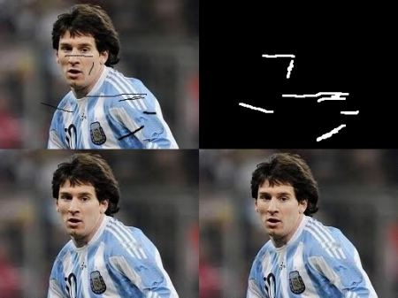

Most of you will have some old degraded photos at your home with some black spots, some strokes etc on it. Have you ever thought of restoring it back? We can’t simply erase them in a paint tool because it is will simply replace black structures with white structures which is of no use. In these cases, a technique called image inpainting is used. The basic idea is simple: Replace those bad marks with its neighbouring pixels so that it looks like the neigbourhood. Consider the image shown below (taken from Wikipedia):
Several algorithms were designed for this purpose and OpenCV provides two of them. Both can be accessed by the same function, cv2.inpaint()
First algorithm is based on the paper “An Image Inpainting Technique Based on the Fast Marching Method” by Alexandru Telea in 2004. It is based on Fast Marching Method. Consider a region in the image to be inpainted. Algorithm starts from the boundary of this region and goes inside the region gradually filling everything in the boundary first. It takes a small neighbourhood around the pixel on the neigbourhood to be inpainted. This pixel is replaced by normalized weighted sum of all the known pixels in the neigbourhood. Selection of the weights is an important matter. More weightage is given to those pixels lying near to the point, near to the normal of the boundary and those lying on the boundary contours. Once a pixel is inpainted, it moves to next nearest pixel using Fast Marching Method. FMM ensures those pixels near the known pixels are inpainted first, so that it just works like a manual heuristic operation. This algorithm is enabled by using the flag, cv2.INPAINT_TELEA.
Second algorithm is based on the paper “Navier-Stokes, Fluid Dynamics, and Image and Video Inpainting” by Bertalmio, Marcelo, Andrea L. Bertozzi, and Guillermo Sapiro in 2001. This algorithm is based on fluid dynamics and utilizes partial differential equations. Basic principle is heurisitic. It first travels along the edges from known regions to unknown regions (because edges are meant to be continuous). It continues isophotes (lines joining points with same intensity, just like contours joins points with same elevation) while matching gradient vectors at the boundary of the inpainting region. For this, some methods from fluid dynamics are used. Once they are obtained, color is filled to reduce minimum variance in that area. This algorithm is enabled by using the flag, cv2.INPAINT_NS.
We need to create a mask of same size as that of input image, where non-zero pixels corresponds to the area which is to be inpainted. Everything else is simple. My image is degraded with some black strokes (I added manually). I created a corresponding strokes with Paint tool.
import numpy as np
import cv2
img = cv2.imread('messi_2.jpg')
mask = cv2.imread('mask2.png',0)
dst = cv2.inpaint(img,mask,3,cv2.INPAINT_TELEA)
cv2.imshow('dst',dst)
cv2.waitKey(0)
cv2.destroyAllWindows()
See the result below. First image shows degraded input. Second image is the mask. Third image is the result of first algorithm and last image is the result of second algorithm.
